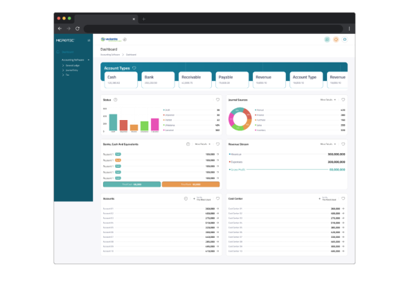

<section class="works-sec">
    <div class="container">
        <h3 class="title">{{sectionTitle}} <span>{{spantit}}</span></h3>
        <div class="menu-info">
            <p-tabMenu [model]="items" [activeItem]="activeItem"  (activeItemChange)="onActiveItemChange($event)" />
        </div>
        <div class="menu-content">
            <div class="image">
                
            </div>
            <div class="info">
                <h4>{{dataTitle}}</h4>
                <ul>
                    @for (item of data; track $index) {
                        <li>
                            <span><i class="fa-solid fa-check"></i></span>
                            <span>{{item.label}}</span>
                        </li>
                    }
                   
                </ul>
            </div>
        </div>
    </div>
</section>
